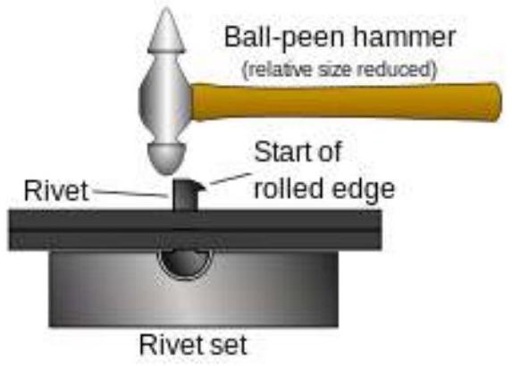
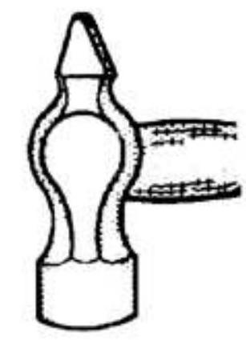
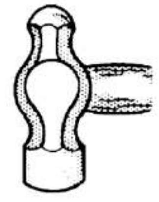
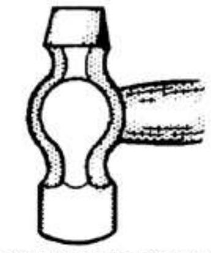

TOPIC 2; ELECTRICAL TOOLS
ELECTRICAL TOOLS
A tool is an instrument used by a person to perform a task. They enable one to perform many tasks which would be extremely difficult without them. A practicing electrician and an electrical craftsman are concerned and the most compelled person to use electrical tools and build up his or she during the years of training.
Electrical tools are classified into the following categories: -
> Cutting tools
> Stripping tools
> Fastening tools
> Fixing tools
> Measuring tools
> Holding tools
> Other general-purpose tools
Cutting tools
There include the following tools: -
- Hacksaw: - originally and principally made for cutting metals, but can also cut various other materials, such as plastic and wood; for example, plumbers and electricians often cut plastic pipe and plastic conduit with the hacksaw.
- Stock and die: - stock and die are tools used to create screwing threads on steel conduits for easier joining of steel conduits and the steel boxes. This process of is known as threading.
- Side cutter pliers: - useful for cutting copper, brass, iron, aluminium and steel conductors and wires.
- Long nose pliers: - used for both cutting and bending, re-position and snip wires. Their name sake long nose gives excellent control while the cutting edge near the plier's joint provides one- tool convenience. Because of their long shape they are useful for reaching into small areas where cables or other materials have become stuck or unreachable with fingers or other means.
Stripping tools
They include the following tools: -
i. Utility knife: - used for removing cable insulation
ii. Wire stripper: - a wire-stripper is a small, hand-held device used to strip the electrical insulation from electric wires.
Measuring tools
They include the following tools: -
i. Engineer's ruler: - a scaled ruler for measuring distances and transferring measurement at a fixed ratio of length.
ii. Vanier Calipers: - an instrument for measuring external or internal dimensions, having two hinged legs resembling a pair of compasses and in- turned or out-turned points.
iii. Micrometer screw gauge: - a gauge which measures small distances or thickness between its two faces, one of which can be moved away from or towards the other by turning a screw with a fine thread.
iv. Try square: - an implement used to check and mark right angles in constructional work
v. Spirit level: - a device of a sealed glass tube partially filled with alcohol or other liquids, containing an air bubble whose position reveals whether a surface is perfectly level.
vi. Scriber: - a pointed instrument used for making marks on wood, bricks etc. To guide a saw or in signwriting.
vii. Center punch: - a tool consisting of a metal rod with a conical point for making an indentation, to allow a drill to make a hole at the same spot without slipping over.
viii. Plumb line: - a line with a plumb attached to it, used for finding the depth of water or determining the vertical on an upright surface. A Bob of lead or other heavy material forming the weight of a plumb line.
ix. Measuring tape: - a length of tape or thin flexible metal, marked at graded intervals for measuring.
Fixing and fastening tools
They include the following tools
i. Screw driver: - a screw driver is a tool, manual or powered, for screwing and unscrewing (driving and removing) screws from surfaces. A screw driver is classified by its tip, which is shaped to fit the driving surface- - slot, grooves, recesses, etc. On the corresponding screw head. Proper use requires that the screwdriver's tip engage the head of a screw of the same size and type designation as the screwdriver tip. Screwdriver tips are available in a wide variety of types and sizes.
ii. Spanner: - a tool with a shaped opening or jaws for gripping and turning a nut or bolt.
iii. Adjustable pipe: - the pipe wrench (us), stills in wrench still sons (UK) is an adjustable wrench/ spanner used for turning soft iron and fittings with a rounded surface.
Drilling tools
There include the following tools
a) A gimlet is a hand tool for drilling small holes, mainly in wood, without splitting.
b) Masonry drills: - is a typically used with a hammer $\square$ drill, which hammers the bit into the material being drilled as it rotates; the hammering breaks up the masonry at the drill bit tip, and the rotating flutes carry away the dust. Power drill with variable speed and hammer action.
c) Raw plug tools and bits: - used for making holes in bricks wall or concrete to insert raw plug.
Other general-purpose tools
i) Bending springs: - used for bending PVC conduits.
ii) Reamer: - used for removing burrs from inside edge of the conduits.
iii) Crimping tool: - used for preparation of conductors for termination.
iv) Bench vice: - to clamp or hold piece of conduit or metals when cutting or holding tightly a piece of metal while working on it.
v) Pot and ladle: - used to solder bit joint by heating the solder in the pot and then pouring it over joint by ladle.
vi) Chisel: - used to cut or shape metal in the workshop.
a) Also used for cutting away concrete, brick and other building materials to make way for pve and steel conduits.
b) For effective with a chisel requires a knowledge of the material to be cut. I.e. the angle or rake and clearal must be considered.
c) The following is a guiding table on angles selection: -
Table 2. 1 chisel cutting angles
| MATERIALS | CUTTING ANGLES IN DEGREES |
|---|---|
| Cast-steel | 65 |
| Cast-iron | 60 |
| Mild-steel | 55 |
| Brass | 50 |
| Copper | 45 |
| Aluminium | 30 |
d) A flat chisel is a general-purpose tool.
e) Cross-cut chisel is used for grooving materials, cutting keyway slot and for cutting places where the flat chisel is not convenient
vii) File: - is a cutting tool. The most usual form of file that has cross-cut teeth i.e. the groove of the face of file run into direction dividing small diameter of teeth. The single cut file has only one series of group.
Types of files
i. Flat file: - is parallel for about $2/3^{6}$ of its length and..., ........ It is used for cutting on both faces and both edges.
ii. The hand file: - has a parallel width throughout its length. Bot faces are double cut, one edge is only......... The safe (the uncut edge) prevents cutting into or a square corner while the face has been filed. Both the hand and flat file are used for general purpose. Hand file used when filing up to increase sharpness of other tools, it must be kept straight and square.
iii. Square file: - it is parallel for two thirds $2/3\ldots$... It has double cutting on all sides and is used for filling corners and slots where a hand file cannot enter.
iv. Round file tapers: - as does square file: it is used for filing out holes producing rounded corners, round-ended.
v. The three-square file: - is used for corners less than one position where awkward corners have to be taken and are graded as rough, bastard, second cut, smooth.
viii) The scrapper: - the flat scrapper resembles the file but is used...... Metal is removed from a surface by scrapping rather than cutting.
ix) The conduits vice: - is used for holding work piece while it is being operated on. There are two types of vices in electrical workshop which are: -
a) Bench vice: - used for bench work.
b) Pipe vice: - used for holding pipework and is probably looks more familiar vice to the electrician outride workshop.
x) The hammer: - there are many shapes of hammer heads, each designed for a specific type of work. The striking face is called pen.
Types of hammer
- They include the following
i. Ball pen hammer: - used for rivoting over the ends of pins and riven
ii. Engineer's hammer: - are made in weights varying from 100 g to $1/2 \mathrm{~kg}$. When choosing a hammer, you choose according to the weight.
iii. Light hammer: - are used for lighter and more delicate operations such as center punches, riveting, driving in small pins.
iv. Heavy hammer: - are necessary to do heavy chipping, driving and collars into shafts and driving in large pins into holes.
v. Hammer shafts: - should be made from well seasoned straight grained hickery and be free from knots and off defects.
vi. Sledge hammer
vii. Claw hammer
viii. Cross and straight pen
ix. Club hammer
xi) The center punch: - is used when a circular dot marks are required. Are also used for marking the Centre point of a drilled holes to give the drill a good start and for marking the center of circles to provide a suitable point for placing on the leg of a divider to scribe the circle.
Use and care for TOOLS
i) All tools should receive regular care and attention at frequent intervals through their working life.
ii) This is necessary if the tools are expected to perform their duties effectively and efficiently.
iii) A tool need sharpening at the edge where it becomes full.
iv) Hammer heads become loose and require tightening.
v) Screwdriver blades become distorted and tapered and need grounded carefully to restore and efficient working edges.
vi) Twist drill require grinding correctly for quick, clean and accurate work.
vii) Tools used as gauges should be kept a side when not in used so that their surfaces are not damaged in any way.
viii) When soft metals are filed the file, tooth tend to become filled with lamped with metal. If the teeth are not cleared the filing operation will prove difficult. If the metal is not firmly wedged it may be removed using a file card.
ix) Tightly wedged lumps of metal must be laboriously picked with the point of a scriber.
x) File teeth are very brittle. Thus, files should never be mixed with other tools but kept separately.
xi) When the thread on an electrical conduit is cut, the end should be filed to remove the left behind sharp surfaces as it could damage cable insulation when drawing them inside the conduits.
xii) The quality of an electrician in most cases can be simple in appearance and tool kit. Its clothing should be neat and with no loose ends hanging around. There should be sufficient,
Workshop practice
i) First aid facilities and carbon dioxide fire extinguishers equipment's should be provided and placed at strategic places in the workshop.
ii) All power machines must be grounded and provided with emergency stopping options.
iii) Permit to work firms must be obtained when there is the possibility of live circuits or apparatus to be worked on.
iv) There must be free access to work areas at all times.
v) All accidents must be reported and recorded.
vi) For marking out and measurement of materials use: rulers, scribers, Centre punches, calipers, squares, gauges and micrometers.
vii) Cutting of materials requires shears, hacksaw, files, drills and grinding wheel.
viii) Internal screw threads are cut with wrenches and taps.
ix) Soldering process use blow lamps or gas torches for components with a suitable soldering flux and solder for the joints.
Site practice
i) Electrician general tools are required for cable installation, operation and accessories fixing.
ii) Access to work areas requires steps, Ladders and thistles.
iii) First fix is the installation of cables and enclosures, carried out when building is yet to finishing stage.
iv) Second fix is the fixing of accessories and luminaries when the surface is completed.
v) The application form for the power supply feed gives all information of the installation and must be submitted to the power supply authority.
Tools storage and organisations
The following will be considered when deciding on an appropriate tool storage system.
> General storage;
- It should be convenient to minimize the labour required for
* Putting materials in the store
* Receiving materials quickly and order from the store
* Maintaining materials in good order
* Accounting for materials
* Inspecting the quality and quantity
> Safe storage;
- This will prevent the following: -
* Breakages
* Spoilage
* Sunlight
* Pests
* Dampness
* Heat or cold
> Physical storage
- There should be physical storage for the following reasons: -
* Reducing duplication of storage materials,
* Helping to maintain adequate supplies,
* Preventing wastage.
Types of storage facilities
- Provision should be made for storage of the following: -
* Raw materials
* Finished products
* Materials for display
* Hand tools/small equipment's
* Teaching aids and models
Methods of storage facilities
* Cupboards for storing materials and hand tools
* Shelves and racks
* Bins
* Containers
* Tool kits
* Cabinets
* Drawers
Maintaining tools
This is making sure that tools remain in good condition for a long time. The following are some of ways of maintaining tools: -
a) Cleaning of tools after use,
b) Sharpening edges of cutting tools,
c) Oiling and greasing of moving parts of the tools,
d) Proper use of tools,
e) Proper storage of tools,
f) Keeping tools handles in smooth conditions always.
KNEC QUESTIONS
1. (2019) - Explain two safety precautions to be observed when using each of the following engineering tools; -
i) Screwdrivers;
- Always match the size and type of screwdriver blade to fit the head of the screw.
- Do not hold the work piece against your body while using a screwdriver.
- Do not put your fingers near the blade of the screwdriver when tightening a screw.
- Use a drill, nail, or an awl to make a starting hole for screws.
- Do not force a screwdriver by striking with a hammer or using a pliers to twist it.
- Do not use a screwdriver as a punch, chisel, pry bar or nail puller.
- When you are performing electrical work, use the screwdriver that has the blue handle. This screwdriver is insulated.
- Do not carry a screwdriver in your pocket.
- Do not use a screwdriver if your hands are wet, oily or greasy.
- Do not use a screwdriver to test the charge of a battery.
- When using the spiral ratchet screwdriver, push down firmly and slowly
ii) Files;
- Do not use a file as a pry bar, hammer, screwdriver or chisel.
- When using a file or a rasp, grasp the handle in one hand and the toe of the file in the other.
- Do not hammer on a file.
iii) Hammer
- Use a claw hammer for pulling nails.
- Do not strike nails or other objects with the cheek of the hammer.
- Do not strike a hardened steel surface, such as a cold chisel, with a claw hammer.
iv) Chisels
- Use the chisel that has been sharpened. Do not use a chisel that has a dull cutting edge.
- Do not use chisels that have mushroomed striking heads.
- Hold a chisel by using a tool holder, if possible.
- Clamp small work pieces in the vise and chip towards the stationary jaw when you are working with a chisel.
2. (oct/nov-2014) - Explain the application of each of the following tools when used in electrical installation practice: -
i) Long nose pliers
Used to grip small objects, reach awkward places, holding wires, bend loops and attach wires.
ii) Side cutter
Used to cut wire and the leads (or legs) of components in electronics. They can also be used to strip the insulation from wire.
iii) Ball-pein hammer
Peen hammers are used to shape, move, or stretch metal. The peening face is useful for rounding off edges of metal pins and fasteners, such as rivets.
The common ball peen hammer has two heads, one flat and the other, called the peen, rounded. It is distinguished from a cross-peen hammer, diagonal-peen hammer, point-peen hammer, or chisel-peen hammer. Peening is normally a cold work process, but peening may also be performed after welding to help relieve the stresses that develop on cooling in the welded metal.
CROSS PEEN HAMMER
BALL-PEEN HAMMER
STRAIGHT PEEN HAMMER
iv) https://www.grainger.com/know-how/equipment-information/kh-types-ofhammers
v) Hand drill
a) used for making round holes or driving fasteners.
b) used as a tool for drilling holes in hard materials such as wood, stone, or bone.
1. Oct-Nov 2018 - Explain the function of each of the following workshop tools and state how they are stored
i. Hacksaw
ii. Soldering bit
iii. Centre punch
2. t